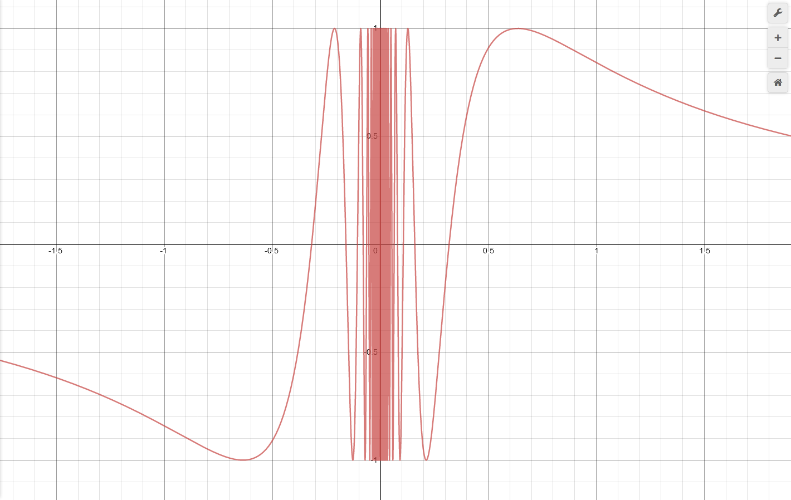
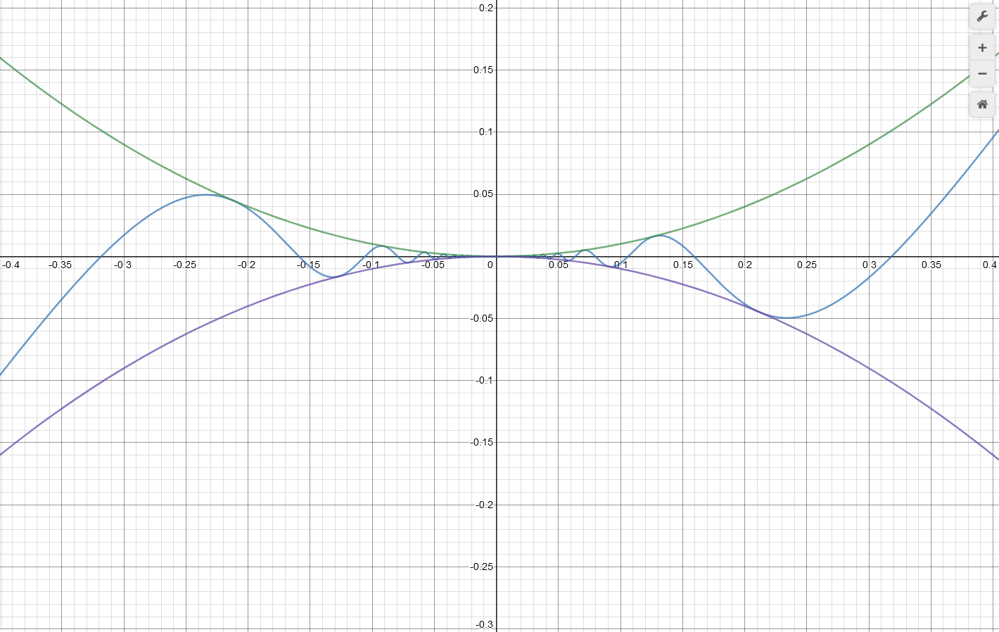
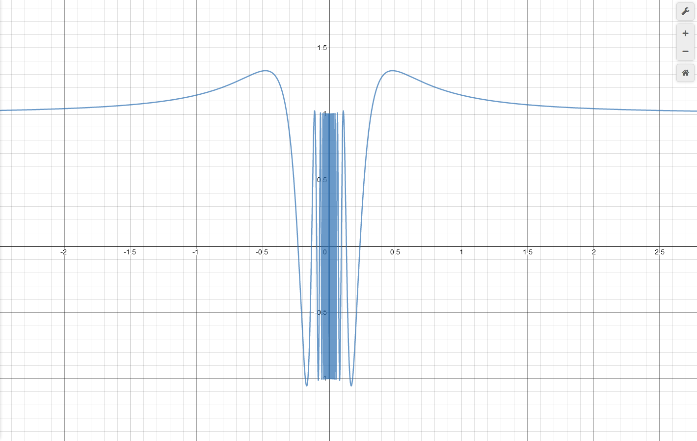
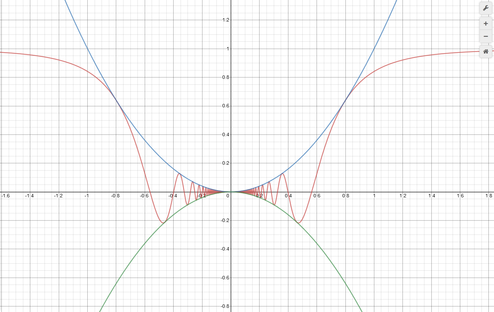
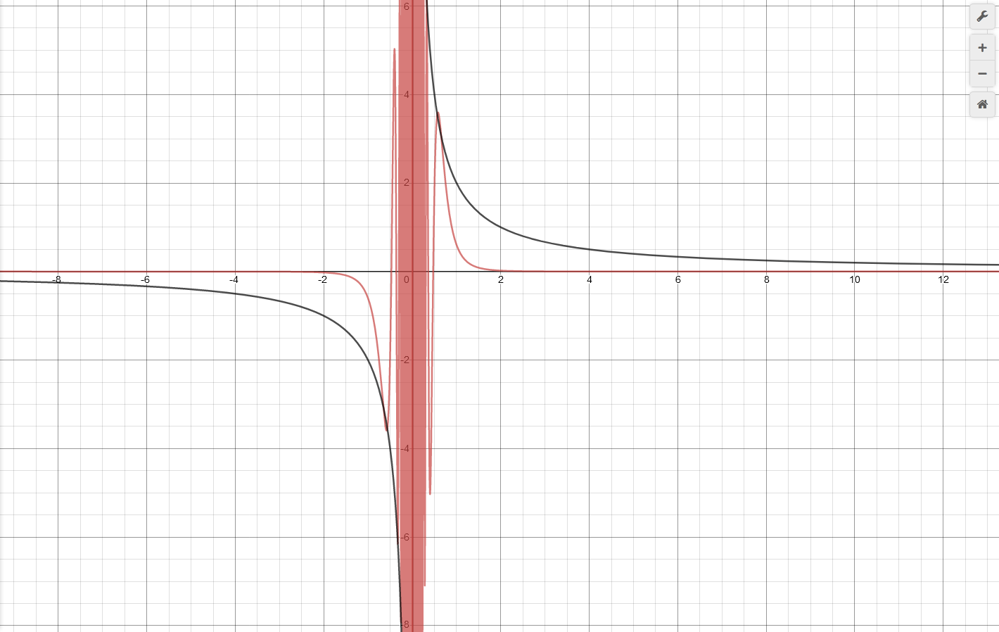

Ολο-clear-ώματα: Ολοκλήρωση vs Αντιπαραγώγιση#

Ο πίνακας Η κόκκινη σωσίβια λέμβος στο δρόμο της προς τη θάλασσα του Michael Ancher.#
Wellcome!#
Καλωσήρθατε στη νέα σειρά του Aftermaths! Όχι, δεν εγκαινιάζουμε κάποια νέα πλατφόρμα, μη νομίζετε ότι την είδαμε netflix εδώ πέρα. Η σειρά Ολο-clear-ώματα είναι, αρχικά, ένα πολύ κακό λογοπαίγνιο - αλλά, το ξέρουμε, τέτοιοι είμαστε εδώ στο Aftermaths. Κατά δεύτερον και κυριότερο(ν), είναι μία σειρά που στόχο έχει να ασχοληθεί με διάφορα θέματα γύρω από τα ολοκληρώματα - ελπίζουμε να ήταν σαφής ο υπαινιγμός του τίτλου της σειράς. Τα θέματα αυτά, άλλωτε θα άπτονται της ύλης του λυκείου, άλλωτε θα ξεφεύγουν λίγο, άλλωτε θα περνάν μια βόλτα από τη θεωρία μέτρου, αλλά πάντα θα είναι σχετικά με την ολοκλήρωση.
Καλή μας αρχή, λοιπόν, με αυτήν την πρώτη ανάρτηση, στην οποία αντιπαραβάλλουμε δύο, τελικά, όχι και τόσο όμοια πράγματα: την ολοκλήρωση και την αντιπαραγώγιση.
Πρελούδιο#
Τι είναι, μωρέ, η ολοκλήρωση; Το ανάποδο της παραγώγισης! Να, πάρε για παράδειγμα το ολοκλήρωμα:
\(\int_0^1x^4dx\) .
Τι κάνουμε για να το βρούμε; Παρατηρούμε ότι \(\ \left(\frac{x^5}{5}\right)'=x^4\) και μετά γράφουμε:
\(\int_0^1x^4dx=\left[\frac{x^5}{5}\right]_0^1=\frac{1}{5}\) .
Με λίγα λόγια, βρήκαμε μία παράγουσα της \(x^4\) (αντιπαραγωγίσαμε) και από εκεί και μετά η δουλειά μας ήταν εύκολη. Άρα, ολοκλήρωση vs αντιπαραγώγιση σημειώσατε «X».
Το θεμελιώδες θεώρημα του Απειροστικού Λογισμού#
Η παραπάνω διαδικασία που περιγράψαμε, συνδέοντας την αντιπαραγώγιση με την ολοκλήρωση, «νομιμοποιείται» μέσω του θεμελιώδους θεωρήματος του απειροστικού λογισμού, το οποίο μας λέει το εξής:
Έστω \(f:[a,b]\to\mathbb{R}\) μία ολοκληρώσιμη συνάρτηση και έστω \(F\) μία παράγουσά της στο \([a,b]\) . Τότε:
\[\int_a^bf(x)dx=F(b)-F(a).\]Θεμελιώδες Θεώρημα του Απειροστικού Λογισμού
Το παραπάνω θεώρημα μας λέει με άλλα λόγια ότι: Αν γνωρίζουμε μία παράγουσα μίας ολοκληρώσιμης συνάρτησης τότε μπορούμε να υπολογίσουμε το ολοκλήρωμά της σε ένα διάστημα απλώς αφαιρώντας τις τιμές της παράγουσας στα άκρα του διαστήματος. Με άλλα λόγια, για όσες ολοκληρώσιμες συναρτήσεις έχουν κάποια «υπολογίσιμη» αντιπαράγωγο, είναι εύκολο να υπολογίσουμε κάθε ορισμένο ολοκλήρωμά τους. Υπό αυτό το πρίσμα, η αντιπαραγώγιση και η ολοκλήρωση φαίνεται να ταυτίζονται. Ωστόσο, κάτι τέτοιο, όπως θα δούμε παρακάτω, δεν ισχύει.
Συναρτήσεις που έχουν αντιπαράγωγο αλλά δεν είναι ολοκληρώσιμες σε κάποιο κλειστό διάστημα#
Αρχικά, θα δείξουμε ότι υπάρχουν συναρτήσεις οι οποίες, ενώ έχουν αντιπαράγωγο - παράγουσα, δηλαδή - εντούτοις, δεν είναι ολοκληρώσιμες σε κάποιο διάστημα του πεδίου ορισμού τους. Πριν δώσουμε ένα τέτοιο παράδειγμα, ας προσπαθήσουμε να σκεφτούμε λίγο τη διαίσθηση πίσω από αυτό. Πρέπει να δώσουμε μία πειστική απάντηση στα εξής δύο ερωτήματα:
Τι «χρειάζεται» για να έχει μία συνάρτηση παράγουσα;
Τι «χρειάζεται» για να είναι μία συνάρτηση ολοκληρώσιμη σε ένα (κλειστό) διάστημα;
Ως προς το δεύτερο, είναι απαραίτητο μία συνάρτηση να είναι φραγμένη δηλαδή η γραφική της παράσταση να ζει μέσα σε ένα ορθογώνιο. Για το πρώτο, όπως ξέρουμε από το Θεώρημα του Darboux, μία συνάρτηση που είναι η παράγωγος κάποιας άλλης - έχει, με άλλα λόγια, παράγουσα - ικανοποιεί το συμπέρασμα του θεωρήματος ενδιάμεσης τιμής (χωρίς, απαραίτητα, να είναι συνεχής). Επομένως, δεν μπορούμε να πάρουμε μία συνάρτηση της μορφής:
για κάποιο σύνολο \(A\subseteq\mathbb{R}\) , μιας και μία τέτοια συνάρτηση παίρνει τις τιμές 0 και 1 και καμία άλλη ενδιάμεσά τους.
Κρατώντας αυτά κατά νου, ας ξεκινήσουμε να ψάχνουμε τη συνάρτησή μας. Μία πρώτη ιδέα, φαινομενικά απλοϊκή, θα ήταν να ψάξουμε για μία συνάρτηση \(F\) η οποία να είναι παραγωγίσιμη αλλά η παράγωγός της να μην είναι φραγμένη σε κάποιο κλειστό διάστημα - οπότε εμείς θα πάρουμε την παράγωγο της \(F\) για να κάνουμε τη δουλειά μας. Αφού, λοιπόν, η παράγωγός της δε θα είναι φραγμένη σε κάποιο κλειστό διάστημα, δε θα είναι και συνεχής εκεί - ωστόσο, όπως είπαμε, πρέπει να ικανοποιεί την ιδιότητα της ενδιάμεσης τιμής, από το Θεώρημα του Darboux. Τι σημαίνει, όμως, εποπτικά, μη φραγμένη παράγωγος;
Η παράγωγος σε ένα σημείο, όπως έχουμε συζητήσει και αλλού (π.χ., βλ. εδώ, σελ. 47-49 και αλλού), μπορεί να ερμηνευθεί σαν την κλίση της εφαπτομένης της γραφικής παράστασης της συνάρτησης σε εκείνο το σημείο. Επομένως, αφού θέλουμε η παράγωγος της \(F\) να μην είναι φραγμένη, πρέπει να έχει κλίσεις οι οποίες να μπορούν να γίνουν οσοδήποτε θετικές ή/και αρνητικές θέλουμε. Με άλλα λόγια, πρέπει η γραφική παράσταση της \(F\) να μπορεί να γίνει οσοδήποτε απότομη θέλουμε σε ένα κλειστό διάστημα του πεδίου ορισμού της. Αυτό, ίσως φέρει σε κάποιους ένα σχήμα όπως το παρακάτω:

Μία «οσοδήποτε απότομη» γραφική παράσταση.#
Μία συνάρτηση με αυτή τη γραφική παράσταση είναι η \(F(x)=\sin\dfrac{1}{x}\) , η οποία, ωστόσο, όπως και να την ορίσουμε στο 0, δεν είναι ούτε παραγωγίσιμη ούτε και συνεχής εκεί, ενώ είναι παραγωγίσιμη και συνεχής παντού αλλού. Ωστόσο, μπορούμε εύκολα να διορθώσουμε το παραπάνω «ψεγάδι» θεωρώντας τη συνάρτηση:
η οποία έχει γραφική παράσταση όπως η παρακάτω:

Η γραφική παράσταση της \(F\) . Φαίνονται επίσης και οι περιβάλλουσες \(y=x^2\) και \(y=-x^2\) .#
Ας παρατηρήσουμε ότι η παραπάνω συνάρτηση είναι παραγωγίσιμη παντού - στο 0 μπορούμε να το αποδείξουμε χρησιμοποιώντας τον ορισμό, ενώ παντού αλλού προκύπτει άμεσα - με την παράγωγο της \(F\) να είναι η:
Και τώρα, η στιγμή της αλήθειας. Ας δούμε τη γραφική παράσταση της \(f=Fʹ\) :

Φτουυυυ! Είναι φραγμένη…#
Δυστυχώς, όπως λέει και η λεζάντα, η \(f\) είναι φραγμένη… Ας πάμε να δούμε τι πήγε «λάθος» στην επιλογή της \(F\) . Προφανώς, επιδιώκουμε να «χαλάσουμε» το φράξιμο της \(f\) κοντά στο 0, οπότε και θα θέλαμε να εμφανιστεί μετά την παραγώγιση ένας όρος της μορφής \(\dfrac{1}{x}\) . Παραγωγίζοντας την \(F\) , βλέπουμε ότι:
Αν είχαμε έναν παράγοντα της μορφής \(\dfrac{1}{x}\) δίπλα στο \(\cos\frac{1}{x}\) , τότε θα ήταν όλα όμορφα. Όμως, το \(-\dfrac{1}{x^2}\) που εμφανίζεται κατά την παραγώγιση «σκοτώνεται» με το \(x^2\) .
Με αυτό κατά νου, ας δούμε τι θα έκανε η συνάρτηση:
Η γραφική της παράσταση είναι η παρακάτω:

Μία βελτιωμένη εκδοχή της πρώτης μας ιδέας…#
Εύκολα μπορούμε να δείξουμε ότι είναι παραγωγίσιμη με παράγωγο:
Η γραφική παράσταση της παραγώγου είναι:

Η παράγωγος της \(F\) μαζί με την περιβάλλουσα \(\frac{1}{x}\) .#
Ναι! Τα καταφέραμε! Η παράγωγος, εμφανώς, «ταλαντώνεται» με απεριόριστα μεγάλο πλάτος κοντά στο 0, οπότε, σαφώς, δεν είναι φραγμένη - για ένα αυστηρότερο επιχείρημα, δοκιμάστε να υπολογίσετε το \(f(\sqrt{1/2k\pi})\) για τις διάφορες τιμές του \(k\in\mathbb{Z}\) . Επομένως, βρήκαμε μία συνάρτηση, την:
η οποία έχει παράγουσα στο \(\mathbb{R}\) , ωστόσο, δεν είναι ολοκληρώσιμη σε κανένα διάστημα που περιέχει το 0 - αφού δεν είναι φραγμένη σε κανένα τέτοιο διάστημα.
Κι εδώ, ως γνήσιοι μαθηματικοί, θέτουμε το εξής ερώτημα: Μπορούμε να βρούμε μία συνάρτηση που να έχει παράγουσα, να μην είναι ολοκληρώσιμη σε ένα κλειστό διάστημα και, επιπρόσθετα, να είναι και φραγμένη; Αναμείνατε για το Βʹ μέρος της σειράς…
Συναρτήσεις που δεν έχουν (ή «δεν έχουν») παράγουσα, αλλά είναι ολοκληρώσιμες σε κάποιο κλειστό διάστημα#
Εδώ τα πράγματα είναι πάρα πολύ απλά. Όπως έχουμε δει και εδώ - και μας έχει πει και ο Darboux - υπάρχουν αρκετές «απλές» συναρτήσεις που δεν έχουν παράγουσα. Μία από αυτές είναι η:
η οποία δεν έχει παράγουσα, είναι, ωστόσο, ολοκληρώσιμη σε κάθε κλειστό διάστημα του πεδίου ορισμού της, αφού είναι συνεχής παντού εκτός από ένα σημείο - το \(x_0=0\) .
Μπορούμε, όμως, να επιτύχουμε και κάποια «χειρότερα» πράγματα. Γνωρίζουμε ότι μία συνάρτηση \(f\) που είναι συνεχής σε ένα διάστημα έχει πάντοτε παράγουσα, αφού, αν πάρουμε ένα \(a\) στο διάστημα που αυτή ορίζεται, τότε η συνάρτηση \(\ F(x)=\int_a^xf(t)dt\) είναι παραγωγίσιμη με \(Fʹ(x)=f(x)\) . Έτσι, για παράδειγμα, η συνάρτηση \(f(x)=x\cot x\) έχει παράγουσα στο \(\left[0,\frac{\pi}{2}\right]\) , αφού είναι συνεχής σε αυτό. Ωστόσο, αν πάμε να βρούμε μία παράγουσά της, θα δυσκολευτούμε αρκετά, είναι η αλήθεια…
Εδώ κάναμε μία μικρή παρατυπία, αφού η συνάρτηση :math:`xcot x` δεν ορίζεται στο 0. Ωστόσο, μπορούμε εύκολα να αποδείξουμε ότι :math:`lim_{xto0}xcot x=1` , οπότε, στην ουσία, όλα όσα λέμε έχουν νόημα για τη συνεχή συνάρτηση:
Ωστόσο, εμείς θα αναφερόμαστε σε αυτήν τη συνάρτηση ως :math:`xcot x` * *για ευκολία. Γενικότερα, τέτοιου είδους μικρές παρατυπίες θα γίνουν και στην πορεία, κυρίως για λόγους ευκολίας στον συμβολισμό.
Αφού προσπαθήσουμε πολύ να βρούμε μία παράγουσα της \(x\cot x\) , θα δούμε ότι δε βγαίνει άκρη, οπότε, αρχίζουμε και σκεφτόμαστε μήπως η παράγουσα που ψάχνουμε «δεν έχει τύπο». Όμως, επειδή δεν υπάρχει κάποια έννοια «τύπου» στα μαθηματικά, πρέπει να ξεκαθαρίσουμε πρώτα για τι πράγμα μιλάμε. Υπάρχουν κάποιες συναρτήσεις που ονομάζονται «στοιχειώδεις» και είναι οι παραδοσιακές συναρτήσεις που μεταχειριζόμαστε στα πλαίσια του λυκείου: πολυώνυμα, ημίτονα, συνημίτονα, εκθετικές, λογαριθμικές και οι πράξεις μεταξύ αυτών. Έτσι, παίρνουμε μία τεράστια «γκάμα» συναρτήσεων μέσα στις οποίες είναι και η \(x\cot x\) . Οπότε, λέγοντας «δεν έχει τύπο» εννοούμε ότι «δεν μπορεί να εκφραστεί ως στοιχειώδης συνάρτηση».
Τώρα, ενώ παραγωγίζοντας μία «στοιχειώδη» συνάρτηση παίρνουμε πάντα μία στοιχειώδη συνάρτηση - μια ματιά στους κανόνες παραγώγισης μπορεί να σας πείσει - με την αντιπαραγώγιση τα πράγματα δεν είναι τόσο ρόδινα. Μία συνάρτηση που μπορεί να είναι τόσο στοιχειώδης όσο η \(x\cot x\) μπορεί να έχει παράγουσες που δεν είναι (καθόλου) στοιχειώδεις. Αυτό, είναι η αλήθεια, ξεφεύγει κατά πολύ από τους σκοπούς αυτής της σειράς αναρτήσεων, ωστόσο, όποιος έχει όρεξη ή/και περιέργεια - συνήθως, αυτά πάνε μαζί, βέβαια - μπορεί να ασχοληθεί με έναν πολύ ενδιαφέροντα κλάδο των μαθηματικών, τη Διαφορική Θεωρία Galois. Επίσης, σχετικά με το πρόβλημά μας, μπορεί κανείς να μελετήσει και τον αλγόριθμο του Risch, ο οποίος αποφαίνεται υπό ορισμένες συνθήκες, αν μία συνάρτηση έχει στοιχειώδη παράγουσα και τη βρίσκει, αν αυτή υπάρχει.
Πίσω στο θέμα μας, είδαμε ότι η συνάρτηση \(x\cot x\) έχει παράγουσα που δεν είναι δυνατόν να εκφραστεί χρησιμοποιώντας στοιχειώδεις συναρτήσεις. Ωστόσο, τίποτα δε μας αποτρέπει να (αποπειραθούμε να) υπολογίσουμε το ολοκλήρωμα:
\(\ I=\int_0^{\pi/2}x\cot xdx\) ,
Αν πάμε να κάνουμε μία ολοκλήρωση κατά παράγοντες ή κάποια αντικατάσταση ή κάποιο άλλο «σχολικό» τέχνασμα, δε θα βγάλουμε κάτι ζουμερό, τουλάχιστον όχι με μια πρώτη ματιά. Η αλήθεια είναι ότι, αν έβγαινε κάτι ζουμερό με τα «γνωστά κόλπα», πιθανότατα η \(x\cot x\) θα είχε και μία στοιχειώδη παράγουσα, άρα δε θα τη συζητούσαμε τόσο πολύ. Εδώ θα χρειαστούμε μία πιο εξεζητημένη τεχνική - μία από τις πολλές που θα συζητήσουμε σε αυτήν τη σειρά - η οποία είναι η εναλλαγή της σειράς παραγώγισης και ολοκλήρωσης - αλλιώς, ο κανόνας ολοκλήρωσης του Leibniz. Σύμφωνα με αυτόν τον κανόνα - σε μία από τις απλές μορφές του - αν μία συνάρτηση \(f(x,t)\) δύο μεταβλητών είναι συνεχής και ως προς τις δύο μεταβλητές της και η μερική παράγωγός της ως προς \(x\) είναι επίσης συνεχής και ως προς τις δύο μεταβλητές της σε μία περιοχή του \((x,t)\) -επιπέδου που περιλαμβάνει ένα ορθογώνιο \([x_1,x_2]\times[a,b]\) , τότε, για \(x\in[x_1,x_2]\) :
Με πιο απλά λόγια, αυτό που μας λέει ο κανόνας του Leibniz είναι ότι μπορούμε να περάσουμε την παραγώγιση μέσα στο ολοκλήρωμα, υπό ορισμένες συνθήκες. Ας δούμε τώρα πώς θα αξιοποιήσουμε το παραπάνω εργαλείο. Στόχος μας είναι να ξαναγράψουμε κάπως το ολοκλήρωμά μας έτσι ώστε να το εντάξουμε σε μία γενικότερη «ομάδα» ολοκληρωμάτων - εμφανίζοντας μία δεύτερη μεταβλητή πέρα από το \(x\) -, να βρούμε αυτά τα ολοκληρώματα με χρήση του παραπάνω κανόνα και έπειτα να επιστρέψουμε στην αρχική ειδική περίπτωση που είχαμε να αντιμετωπίσουμε. Ας αρχίσουμε, όμως, γιατί το έχουμε ρίξει στο μπίρι-μπίρι.
Αρχικά, ξαναγράφουμε το ολοκλήρωμά μας ως εξής:
Τώρα, γράφουμε:
Στη συνέχεια, θεωρούμε τη συνάρτηση:
Ώπα, κάτσε, τι είναι αυτό;! Λοιπόν, αν το δούμε ψύχραιμα, όλα καλά είναι, αφού, απλώς, για κάθε \(t\) , ορίσαμε την \(g(t)\) ως την τιμή που θα βρούμε από τον «υπολογισμό» του ολοκληρώματος. Αφού γνωρίζουμε ότι το εν λόγω ολοκλήρωμα υπάρχει, η συνάρτηση \(g\) είναι καλά ορισμένη. Επομένως, το αρχικό μας πρόβλημα ανάγεται στον υπολογισμό του \(g(1)\) . Με τη βοήθεια του κανόνα ολοκλήρωσης του Leibniz, έχουμε:
Παραγωγίζουμε προσεκτικά ως προς \(t\) τη συνάρτηση μέσα στο ολοκλήρωμα, οπότε παίρνουμε:
Τώρα, χρησιμοποιούμε το γεγονός ότι \((\arctan)'(t)=\dfrac{1}{1+t^2}\) , έχουμε:
Ωραία τα έχουμε καταφέρει ως τώρα. Σε αυτό το σημείο θέτουμε \(u=\tan x\Leftrightarrow x=\arctan u\) , οπότε έχουμε \(dx=\dfrac{1}{1+u^2}du\) και:
Πλέον, τα πράγματα είναι σχεδόν εύκολα, αφού έχουμε καταλήξει σε μία ρητή συνάρτηση, οπότε και έχουμε έναν «στρωτό» αλγόριθμο για τον υπολογισμό του παραπάνω ολοκληρώματος. Θα χρειαστεί, βεβαίως, να διακρίνουμε περιπτώσεις.
Αρχικά, για \(t=0\) , έχουμε το απλό:
στο οποίο, θέτοντας \(u=\tan s\) , οπότε \(du=\dfrac{ds}{\cos^2s}\) , παίρνουμε:
*Σημειώστε εδώ, αν δεν τη θυμάστε, την τριγωνομετρική ταυτότητα \(\cos^2x(1+\tan^2x)=1\) *.
Τώρα, για \(t=\pm1\) , έχουμε:
Αν πάμε κι εδώ να θέσουμε \(u=\tan s\) , οπότε \(du=\dfrac{ds}{\cos^2s}\) , παίρνουμε:
Αυτό το ολοκληρωματάκι, υπολογίζεται χρησιμοποιώντας την ταυτότητα \(\cos^2s=\dfrac{1+\cos2s}{2}\) :
Για \(t\neq\pm1\) και \(t\neq0\) θα θέλαμε να κάνουμε την παραδοσιακή διάσπαση απλούστερα κλάσματα. Η αλήθεια είναι ότι, αντί να διασπάσουμε την προς ολοκλήρωση συνάρτηση, θα διασπάσουμε την απλούστερη συνάρτηση:
Έχουμε:
οπότε παίρνουμε το σύστημα:
που έχει λύση \(R=-\dfrac{t^2}{1-t^2}\) και \(S=\dfrac{1}{1-t^2}\) . Επομένως, έχουμε:
Αντικαθιστώντας \(u^2\) στη θέση του \(v\) παίρνουμε:
Έτσι, το ολοκλήρωμά μας γίνεται:
το οποίο μπορεί να σπάσει σε δύο απλούστερα ολοκληρώματα:
Για το δεύτερο ολοκλήρωμα, απλώς θέτουμε \(u=\tan s\) , οπότε έχουμε \(du=\dfrac{ds}{\cos^2s}\) και βρίσκουμε, όπως παραπάνω:
Ανάλογα μπορούμε να δουλέψουμε και για το πρώτο ολοκλήρωμα, θέτοντας \(u=\dfrac{\tan s}{t}\) , οπότε \(du=\dfrac{ds}{t\cos^2s}\) και:
Επομένως, μετά κόπων και βασάνων, έχουμε βρει ότι, για \(t\neq\pm1\) και \(t\neq0\) :
Συνοψίζοντας όλα τα παραπάνω, έχουμε βρει ότι:
ή, πιο συνοπτικά:
Να θυμηθούμε ότι όλα αυτά γίνονται για να υπολογίσουμε το \(g(1)\) . Οπότε, πρέπει να βρούμε την \(g\) , τουλάχιστον κοντά στο 1. Για \(t\) κοντά στο 1 έχουμε:
Ε, δε θα κολλήσουμε στο \(c\) τώρα! Ας θυμηθούμε λίγο τον τύπο της \(g\) :
Για καλή μας τύχη, μπορούμε εύκολα να βρούμε το \(g(0)\) , αφού:
οπότε:
Έτσι, έχουμε \(g(t)=\dfrac{\pi}{2}\ln|1+t|\) και, ειδικότερα \(g(1)=\dfrac{\pi}{2}\ln2\) . Δηλαδή, για να δούμε το έργο μας σε όλο του το μεγαλείο:
Λίγα σχόλια πριν το τελευταίο σφύριγμα…#
Πολλά και ενδιαφέροντα πράγματα συμβαίνουν στον κόσμο των ολολκηρωμάτων. Αρχικά, είδαμε ότι μπορούμε να βρούμε συναρτήσεις οι οποίες, ενώ δεν είναι ολοκληρώσιμες, έχουν παράγουσα. Μετά είδαμε και το αντίστροφο: συναρτήσεις που είναι παντού ολοκληρώσιμες, ωστόσο, δεν έχουν παράγουσα σε όλο το πεδίο ορισμού τους. Είδαμε, επίσης, και μία αρκετά «απλή» συνάρτηση που έχει παράγουσα, ωστόσο αυτή δεν εκφράζεται μέσω στοιχειωδών συναρτήσεων αλλά, παρά τις αντιξοότητες, καταφέραμε να υπολογίσουμε το ολοκλήρωμά της σε ένα κλειστό διάστημα.
Στο τελευταίο αξίζει, ίσως, να σταθούμε λίγο παραπάνω. Αντί να πάμε να υπολογίσουμε με κάποια από τις γνωστές μας τεχνικές ολοκλήρωσης το ολοκλήρωμα της δοσμένης συνάρτησης, μετατρέψαμε το πρόβλημά μας σε ένα αρκετά γενικότερο και υπολογίσαμε όχι μόνο το ολοκλήρωμα που θέλαμε, αλλά μια απειρία ολοκληρωμάτων - όλα τα \(g(t)\) που βρήκαμε είναι ολοκληρώματα, για να μην ξεχνιόμαστε. Αρκετά παράδοξος τρόπος λύσης, θα έλεγε κανείς, αφού μέσα από το απλό και ειδικό είδαμε το γενικό, μέσα από το οποίο μπορέσαμε και ξαναγυρίσαμε στο απλό και ειδικό.
Περισσότερα στο επόμενο μέρος!
Καλό βράδυ!